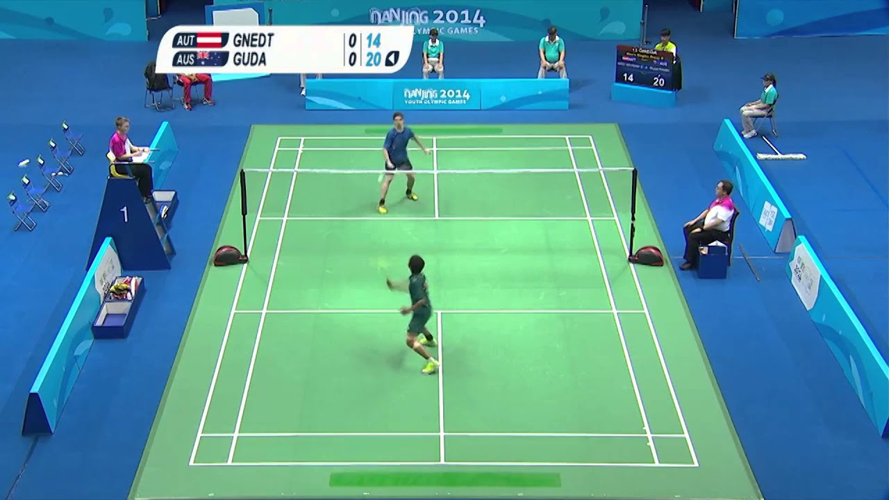

Games employing shuttlecocks have been played for centuries across Eurasia,but the modern game of badminton developed in the mid-19th century among the British as a variant of the earlier game of battledore and shuttlecock. ("Battledore" was an older term for "racquet".)Its exact origin remains obscure. The name derives from the Duke of Beaufort's Badminton House in Gloucestershire,but why or when remains unclear. As early as 1860, a London toy dealer named Isaac Spratt published a booklet entitled Badminton Battledore – A New Game, but no copy is known to have survived.An 1863 article in The Cornhill Magazine describes badminton as "battledore and shuttlecock played with sides, across a string suspended some five feet from the ground".
The game may have originally developed among expatriate officers in British India,where it was very popular by the 1870s.Ball badminton, a form of the game played with a wool ball instead of a shuttlecock, was being played in Thanjavur as early as the 1850s[9] and was at first played interchangeably with badminton by the British, the woollen ball being preferred in windy or wet weather.
Governing Body
BWF-Badminton World Federation
The Badminton World Federation (BWF) is the internationally recognized governing body of the sport responsible for conduction of tournaments and approaching fair play. Five regional confederations are associated with the BWF:
Asia: Badminton Asia Confederation (BAC)
Africa: Badminton Confederation of Africa (BCA)
Americas: Badminton Pan Am (North America and South America belong to the same confederation; BPA)
Europe: Badminton Europe (BE)
Oceania: Badminton Oceania (BO)
Type of match

Singles
Doubles
Singles
Singles games are as the name would suggest – two single players opposite each other. This is what many players imagine when they think of badminton games. The basic rules apply for singles matches. You can often see men’s singles and women’s singles. In casual play, you can of course see men playing against women! Doubles
Doubles games involves having two players against another two players, with either player being allowed to hit the shuttle, without needing to take turns. The only exception to this rule is during the first two shots of the rally, where doubles players need to take turns to hit the shuttle. You can often see men’s doubles, women’s doubles or mixed doubles (each team featuring a man and a woman). The mixed doubles is also called level doubles.